Formules van Macht
What ways are there to gain power? How does power relate to us, and what does this look like? A research into visual aspects of power, attempting to bridge instinctive observations and research. In my thesis I am trying to find tendency and decipher formulas to achieve power.
Macht
Wat is macht? Macht is de invloed die een persoon, bedrijf of organisatie heeft op anderen. Geld, politiek en macht zijn onlosmakelijk verbonden (maar hierover later meer). Als iemand macht heeft, doen andere mensen datgene wat hen wordt opgedragen, althans dat wordt geacht. Macht kent verschillende definities, gradaties en uit zich in verschillende vormen. Een vergelijkende vorm van macht is gezag. Gezag is gebaseerd op de erkenning of rechtmatigheid om macht uit te oefenen. Wanneer je eenmaal macht hebt is het moeilijk om dit weer af te staan. Macht over anderen lijkt verslavend. Als men eenmaal macht heeft verworven, is het verleidelijk om dit steeds verder uit te bouwen.
Je kan het ook wel vergelijken met een wedstrijd. Wanneer je een wedstrijd wint komt er een enorme lading testosteron vrij in je hersenen. Dit zorgt ervoor dat je meer risico’s durft te nemen, waardoor er een tunnelvisie kan ontstaan die gericht is op succes. Dit wordt ook wel het “winnaarseffect” genoemd. De kans is groot dat je de volgende wedstrijd weer wint doordat het zelfvertrouwen in je brein groeit. Als je macht uitstraalt, betekent dit niet per definitie dat je ook daadwerkelijk macht hebt. Het uitstralen van macht kan bijvoorbeeld door middel van kleding, een woning, je spullen of middels het sociaal milieu waarin je je verkeert. Zowel als individu of in een groep kan je macht uitstralen/hebben. Of je het nu wilt of niet, je kan ook geboren worden met macht door de familie waaruit je voortkomt neem als voorbeeld Prince Harry uit Engeland. Aan de andere kant kan je zelf ook bewust of onbewust macht creëren. In tegenstelling tot bijvoorbeeld een monarch, verwonder ik mij voor macht die minder voor de hand ligt en de manier waarop dit is geïntegreerd in onze maatschappij. In het vervolg van deze tekst beschrijf, vergelijk en probeer ik een brug te slaan tussen bevindingen die voortkomen uit instinctieve observaties en onderzoek.
Het onderwerp macht komt niet uit de lucht vallen. Dit onderwerp houdt mij al jaren op verschillende manieren bezig. Ik ben geïnteresseerd in de manier waarop mensen streven naar macht en succes. Wat voor manieren zijn er om macht te verkrijgen, hoe verhoudt het zich tot ons en hoe ziet dit eruit? Daar waar ik niet direct mijn interesse voor dit onderwerp kon verklaren, viel het kwartje tijdens een onderzoek naar modernistische gebouwen in Indonesië. In Indonesië bleek eind 19e eeuw een tekort aan architecten en ingenieurs. Op dat moment was het niet goed gesteld met de bestaande gebouwen en moest er veel bijgebouwd worden. Door dit te kort kwam er een stroming van modernistische architecten en ingenieurs vanuit Nederland naar Indonesië op gang. Door de komst van deze stroming nieuwe architecten kwamen de tot dan toe traditioneel Indonesische gebouwen er heel anders uit te zien.
Ineens werden er heldere constructies gebouwd en veel van de originele traditionele ontwerpen, waarin veel gebruik werd gemaakt van ornamenten, vielen weg. De nieuwe huizen werden weliswaar slimmer ontworpen en beter gebouwd, maar de traditionele Indonesische bouwstijlen met daar de bijbehorende materialen, ornamenten en nauw verbonden geschiedenis vielen hierdoor weg. In het idyllisch tropische klimaat contrasteerde deze modernistische gebouwen nogal van de traditionele houten huizen met rieten daken, die werden omringd door palmbomen en andere tropische fauna. Eenmaal bewoond hadden de bewoners van de modernistische huizen meer aanzien ten opzichte van de bewoners van de traditionele huizen. Gezien het bewind in Indonesië van die tijd en de Westerse uitstraling van huizen was dit niet gek. Dit was het moment dat ik besefte dat niet persé de architectuur in Indonesië mij boeide, maar eerder de (on)bewuste gevolgen en/of achterliggende strategieën die ten grondslag liggen achter dergelijke façades die leiden naar meer macht/aanzien.
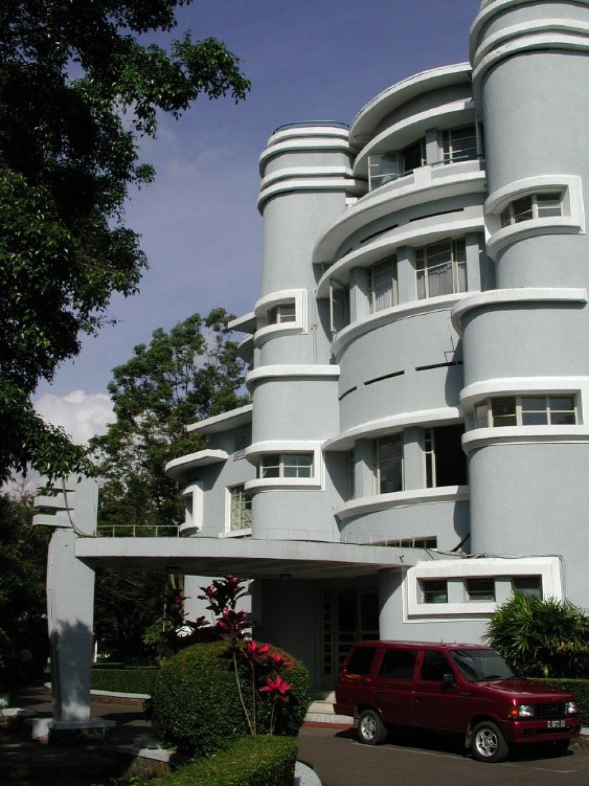De waardijns van het Amsterdamse lakenbereidersgilde, bekend als ‘De Staalmeesters’, Rembrandt van Rijn, 1662
De kans is groot dat je een wedstrijd weer wint, het brein helpt de winnaar hiermee, hierdoor groeit je zelfvertrouwen en durf je steeds meer risico te nemen. Ook is het moeilijk om eenmaal verworven macht weer af te staan. Je kan macht uitstralen, wat niet per definitie betekend dat je ook daadwerkelijk macht hebt. Het uitstralen van macht kan bijvoorbeeld doormiddel van kleding, een woning (materieel) of middels het sociaal milieu waarin je je verkeert. Je kan als groep gezamenlijk macht uitstralen/hebben, maar ook als individu. Je kunt ook geboren worden met macht door de familie waar je vandaan komt (politiek) Maar je kunt jezelf ook macht aanleren, dit kan bewust of onbewust zijn.
Nieuwe Macht
Een relatief nieuwe plek waar tegenwoordig ook macht te verkrijgen is, is het internet. Een voorbeeld hiervan zijn beautyvloggers met hun eigen kanaal op youtube. Veel van deze “influencers” beginnen als jonge tiener met een youtube kanaal waarop ze laten zien hoe je make up aanbrengt. Vier jaar later hebben zij miljoenen volgers, een eigen make-up lijn en vaak zelfs werknemers. Een van de redenen dat sommigen van deze vloggers zo succesvol zijn geworden, is omdat ze als een van de eerste youtubers dagelijkse dingen vastlegden. Doorsnee mensen die gewone dagelijkse dingen filmden en uploadden. Juist omdat ze zo gewoon zijn kunnen andere mensen zich gemakkelijk identificeren.
Ze zien een persoon - net als jij en ik - opgroeien en succesvol worden. Zo wordt het voor veel andere mensen in gedachte ook haalbaar om succesvol te worden, ongeacht welke achtergrond en/of afkomst ze ten deel vallen. Veel van de volgers blijven trouw volgen omdat ze als het ware samen zijn opgegroeid en de influencer zien als een soort vriend, oudere broer of zus. Dit is ook een van de redenen dat influencers vaak veel support blijven behouden onder hun volgers. Naarmate het bereik groeit, worden ze steeds groter en succesvoller. Ze kunnen soms zo groot worden dat ze op een gegeven moment een eigen product kunnen lanceren dat binnen vierentwintig uur is uitverkocht. Ze draaien dan een mega omzet waar menige cosmetica firma’s van dromen. Door het grote bereik dat ze hebben werken grote bedrijven graag samen met influencers.
American Dream
Amerika heeft zichzelf altijd al als groots en intimiderend opgesteld. Op soort van Napoleontische manier staan ze altijd vooraan in de rij als het gaat om landclaim. Is het niet op aarde dan wel ergens anders in het universum. Met de bijbehorende oorlogsretoriek, kijk je wel uit voordat je gaat sollen met Amerika. Het land van onbegrensde mogelijkheden, waar veel mensen graag onderdeel van willen zijn. “The American Dream” Dit is het Amerikaanse ideaalbeeld wat staat voor vrijheid en gelijkheid van alle mensen. The sky is the limit en elke droom is haalbaar, zolang je er maar hard voor werkt. Binnen deze droom is de afkomst van de president niet belangrijk en kan iedereen multimiljonair worden. Het maakt hierin niet uit of je van Adel bent of uit de Bronx komt.
Het verhaal van de krantenjongen die eindigt als directeur van een grote krant, is illustratief voor de American Dream. De eerste immigranten die naar deze “nieuwe wereld” kwamen koesterden deze vrijheid en dromen, en wilden hierin geloven. Amerika werd het land van de vrijheid. De overtuiging van de American Dream is rond de 17 eeuw ontstaan. Het toen nog ongecultiveerde Amerika, werd het land van oneindige mogelijkheden. Veel migranten trokken rond deze periode naar Amerika om een nieuwe start te maken
In Europa hadden veel mensen geen perspectief om door te kunnen groeien naar een beter leven. Dit werd belemmerd vanwege hun afkomst, dit was alleen weggelegd voor koningshuizen of mensen van adel. Zonder de belemmeringen van adel, regering en kerk hoopten deze migranten deze kansen wel in het nieuwe Amerika te vinden. De reden dat veel mensen de stap durfden te wagen, is omdat ze vaak via familieleden hoorden hoe geweldig het was in Amerika, wat ze allemaal al hadden bereikt en hoe groot de huizen waren.
Achteraf blijkt dat veel van deze verhalen mooier werden gemaakt dan ze echt waren. Er zijn genoeg voorbeelden van mensen die de The American Dream hebben waargemaakt, echter was dit niet voor iedereen weggelegd. Toch is The American Dream tot op de dag van vandaag nog belangrijk voor veel mensen en iets waarin ze geloven. Dagelijks komen nog veel individuen naar Amerika om hun Amerikaanse droom proberen waar te maken.
De kans is groot dat je een wedstrijd weer wint, het brein helpt de winnaar hiermee, hierdoor groeit je zelfvertrouwen en durf je steeds meer risico te nemen. Ook is het moeilijk om eenmaal verworven macht weer af te staan. Je kan macht uitstralen, wat niet per definitie betekend dat je ook daadwerkelijk macht hebt. Het uitstralen van macht kan bijvoorbeeld doormiddel van kleding, een woning (materieel) of middels het sociaal milieu waarin je je verkeert. Je kan als groep gezamenlijk macht uitstralen/hebben, maar ook als individu. Je kunt ook geboren worden met macht door de familie waar je vandaan komt (politiek) Maar je kunt jezelf ook macht aanleren, dit kan bewust of onbewust zijn.
Amerikaanse Ambassades
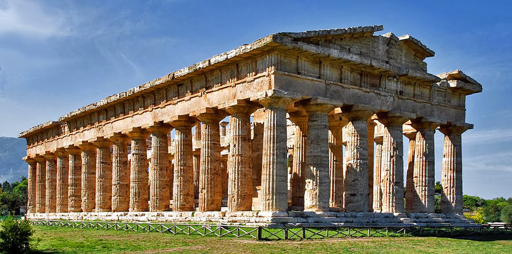De symboliek achter water is dat het heilzaam is, het reinigt je niet alleen aan de buitenkant maar ook aan de binnenkant.
Een duidelijk voorbeeld van status en machtsvertoon van Amerika zijn hun ambassadegebouwen in andere landen. In vergelijking met andere landen zijn er een aantal manieren waarop de Amerikaanse ambassades zich onderscheiden ten opzichte van andere landen. Amerika is een groot land en er zijn veel Amerikanen die in het buitenland wonen. Ze hebben dan ook altijd een groot gebouw nodig voor hun ambassades. Sinds de aanslagen van 9/11 is het veiligheidsniveau opgeschroefd. Ze kopen een stuk grond en maken eventuele bestaande gebouwen met de grond gelijk. Vervolgens ontwerpen ze een gebouw in de vorm van een fort, zodat ze goed overzicht hebben over de omgeving. Dit voor optimale veiligheid voor alle medewerkers.
Ze kunnen eventuele dreiging van een afstand sneller zien en ingrijpen indien nodig. De architectonische en geografische basiseisen van een Amerikaanse ambassade zijn: groot, goed overzicht over de omgeving en met veel eigen grond rondom het gebouw heen. Een ander belangrijk onderdeel is het uiterlijk van deze gebouwen en het verhaal dat het met zich mee brengt. Ze werken veel met symboliek die vaak verwant is aan trots en macht. Zo hebben ze in Beijing (China) het gebouw geplaatst op een zelf aangelegde vijver waarin het water centraal staat. De symboliek achter water is dat het heilzaam is, het reinigt je niet alleen aan de buitenkant maar ook aan de binnenkant.
Dit is iets wat binnen de Chinese cultuur als zeer waardevol wordt beschouwd, niet zozeer binnen de Amerikaanse cultuur. Op deze manier gebruikt Amerika Chinese symboliek in hun architectonisch ontwerp, om zo saamhorigheid, interesse en respect te tonen aan de Chinese cultuur. Via een pad over het water loop je naar de entree toe, waar het gebouw balanceert op zuilen. Je loopt dus over het helende water naar de bron toe, de bron is in dit geval de Amerikaanse ambassade. In de vijver buiten het gebouw staat een 7,6 ton wegend sculptuur van Amerika’s meest succesvolle kunstenaar van dit moment Jeff Koons. Het sculptuur in de vorm van tulpen komt uit de serie ‘Celebrations’. Tulpen staan symbool voor geluk in de Chinese cultuur.
Het is dan ook een bewuste keuze geweest dat de bezoekers dit kunstwerk zien als ze naar de entree lopen van het gebouw. Door de grootte van dit alles voel je je als bezoeker al snel overweldigd. Dit zijn manieren waarmee Amerika puur door uiterlijke kenmerken kracht en macht uitstralen. Dit is zonder enige vorm van schriftelijke of verbale communicatie naar de buitenwereld toe. Het is de massaliteit van dit alles wat het machtsvertoon versterkt. Je kan het ook wel vergelijken met een kasteel uit de middeleeuwen. Bezoek kwam hier te voet of met paard en wagen over een enorm lange oprijlaan en kon zo direct zien hoeveel land de familie bezat. Andersom had de familie zo ook overzicht op de omgeving om bijvoorbeeld eventuele vijanden te zien aankomen, tijd te kopen en maatregelen te treffen, om ze vervolgens op afstand te houden.
Als je überhaupt al in je hoofd haalde een kasteel te bestormen zou je dus wel twee keer achter je oren krabben voordat je een poging zou wagen om de bewoners te bestelen, vermoorden of pogen de troon te confisqueren. Families uit deze tijd lieten zich schilderen door de meest getalenteerde kunstenaars. Wie deze talenten waren werd tegelijkertijd bepaald door dezelfde families. Dit kwam omdat alleen zij het geld hadden om schilders in te huren en zich te laten portretteren.
Zo bepaalden de rijke families wat mooi was en hoe mensen eruit moesten zien. En op deze manier herinneren wij vandaag de dag hoe de rijken van toen met daarbij behorende kledij et cetera eruit zagen. Wanneer we even in deze tijd blijven kunnen we een tendens zien: Amerika huurt Jeff Koons in om een modern zelfportret van Amerika te maken en bepaalt daarmee dat Jeff Koons een van de meest talentvolle kunstenaars is. Hoewel smaken verschillen kunnen we er niet omheen dat Jeff Koons daadwerkelijk een erg succesvol kunstenaar is.
De Amerikaanse ambassades profileren zich op zo’n manier dat ze jou als bezoeker/voorbijganger ontzag inboezemen. Dit zijn enkel een paar voorbeelden van de vele vormen van machtsvertoon. Later in de tekst haal ik ook nog andere manieren aan. De uiterlijke kenmerken zijn een façade waarachter Amerika zich verschuilt. Een façade is de voorgevel van een gebouw, maar wordt ook gebruikt om bij mensen te spreken van 'de uiterlijke schijn ophouden' De Façade van een gebouw is de theatrale kant van een gebouw, dit is de kant die emotie kan opwekken bij bezoeker. Het machtsvertoon reikt niet tot enkel de buitenkant van de ambassades, dit kan ook aan de binnenkant van een gebouw. Een kunstenares die dat goed laat zien is Jacqueline Hassink.
The table of Power
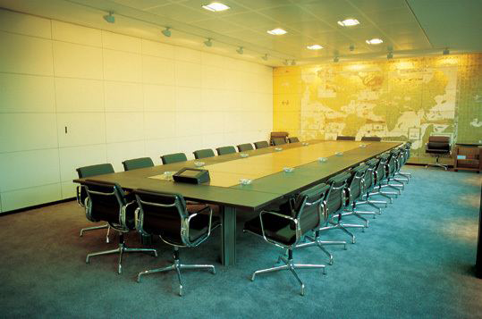De symboliek achter water is dat het heilzaam is
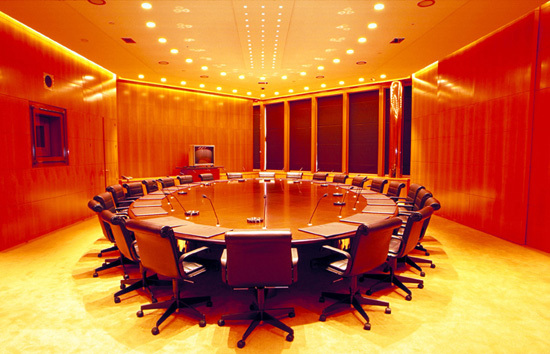De symboliek achter water is dat het heilzaam is

De symboliek achter water is dat het heilzaam is
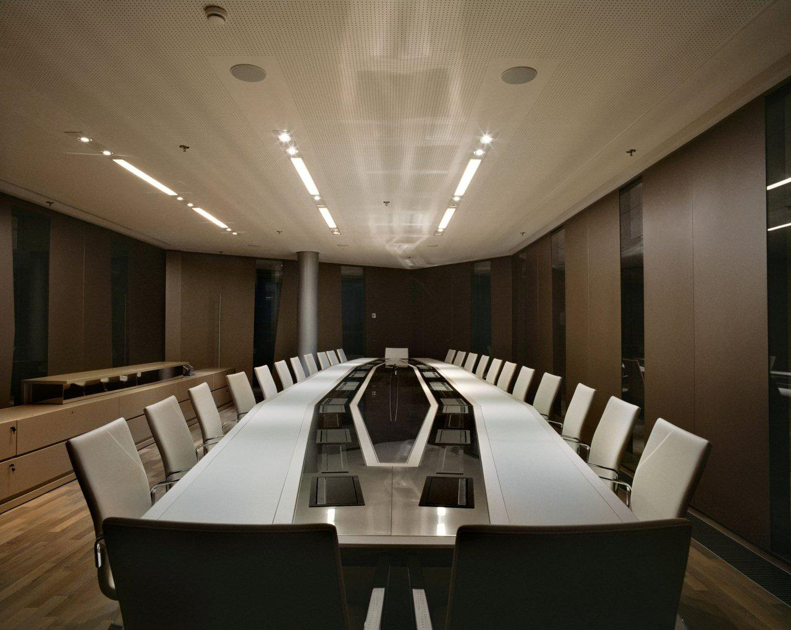De symboliek achter water is dat het heilzaam is
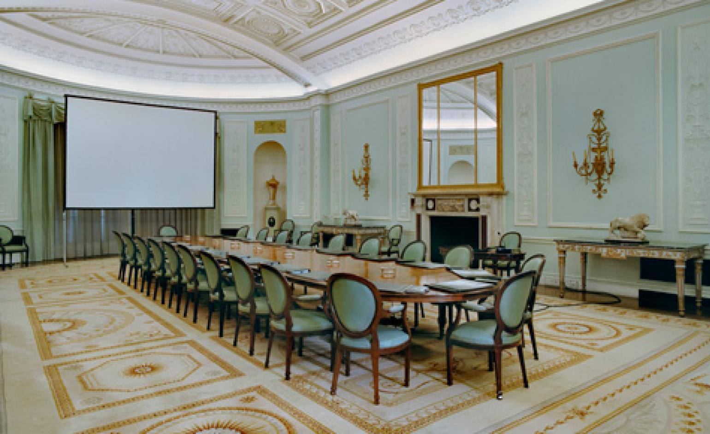De symboliek achter water is dat het heilzaam is
Jacqueline Hassink werkte met onderwerpen als economische macht. Met haar Project The Table of Power laat Hassink lege vergaderruimtes zien van de in de jaren 90 meest succesvolle bedrijven, gepubliceerd door Fortune’s Global 500 magazine. Op deze afbeeldingen zie je lege vergaderruimtes zonder medewerkers of bezoekers. Hierdoor krijg je een impressie wat voor een impact zo’n ruimte op iemand kan maken. Deze foto’s laten de losse materiële ingrediënten zien van macht, alleen zijn de materialen niet in functie in deze afbeeldingen. Je ziet hierdoor heel duidelijk dat de ruimte alleen al een façade is, die op zichzelf krachtig overkomt. Wanneer er functie aan deze ruimte wordt toegevoegd versterkt deze kracht nog meer. In vergelijking met de ambassadegebouwen, zijn deze vergaderruimtes ook groot ontworpen.
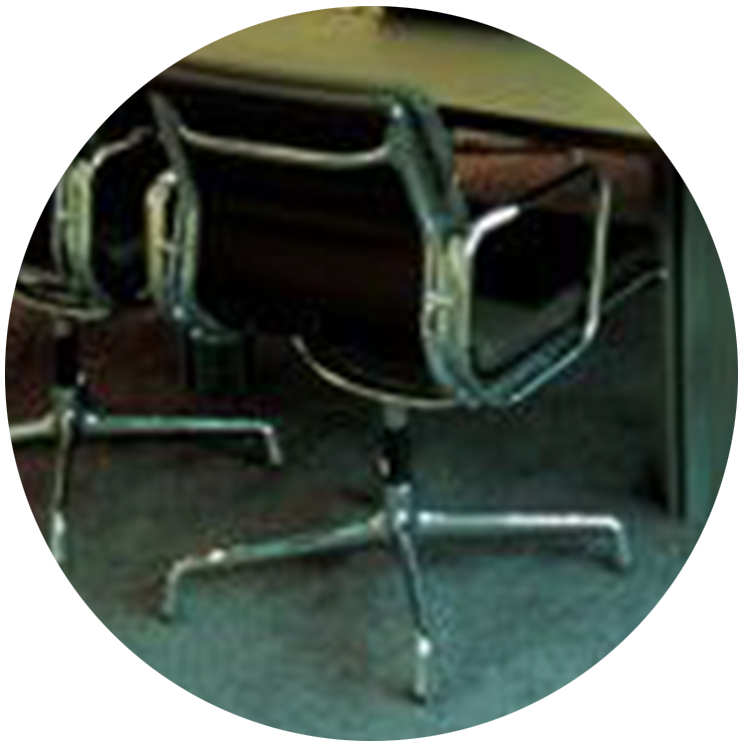De symboliek achter water is dat het heilzaam is
Vergaderruimtes worden bewust zo bedacht en ingericht, de grootste ruimtes zijn de belangrijkste ruimtes, hier komen het bestuur en de belangrijkste gezelschappen samen. Een ovale tafel zorgt ervoor dat iedereen gelijk zit en er geen specifieke kop is waardoor de hiërarchie gelijk is. Dit is in het geval van een bestuurs- of aandeelhoudersvergadering belangrijk, zodat ego’s niet in de weg komen te zitten. Maar buiten deze vergaderruimtes is de rolverdeling weer anders, dan is iedereen weer de leider over zijn eigen groep pupillen.
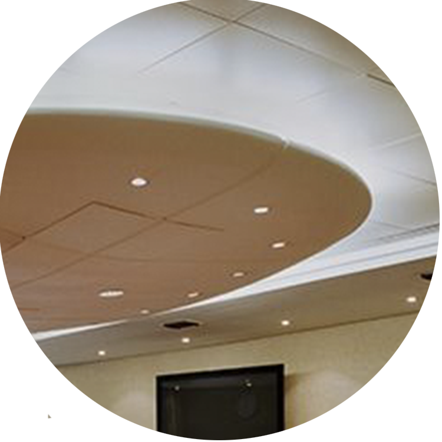De symboliek achter water is dat het heilzaam is
Dit gevoel heb ik zelf meegemaakt toen ik bij een groot advocatenkantoor in Amsterdam moest presenteren. Ik was gevraagd een publicatie te ontwerpen en was zeker van mijn ontwerp en concept. Ik was wat eerder gekomen zodat ik mijn presentatie goed kon voorbereiden. Terwijl ik mij aan het voorbereiden was kwam een horeca medewerker van het kantoor de lunch klaar zetten. Alle hapjes en drankjes werden klaargelegd. Als laatste kwam er een fruitschaal op tafel. Ik keek naar deze schaal en zag dat er allemaal hele dure moeilijk te vinden vruchten op tafel kwamen. Mango stenen, rode passievruchten, dragonfruits en nog andere speciale vruchten. Ineens voelde ik mij kwetsbaar en werd ik onzeker over het ontwerpwerk wat ik had gemaakt en of dit wel aan hun niveau voldeed. Dit komt omdat ik mij ervan bewust van was dat dit soort vruchten exclusiever zijn en moeilijker verkrijgbaar en daarom voelde het alsof mijn ontwerp ook heel exclusief en ingewikkeld moest zijn terwijl dit nooit aan mij verteld is.
De schone schijn van het uiterlijk. (12 p.)
Rites of Passage
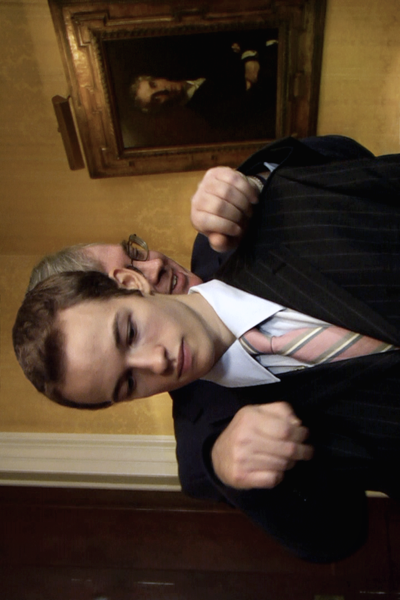00:31
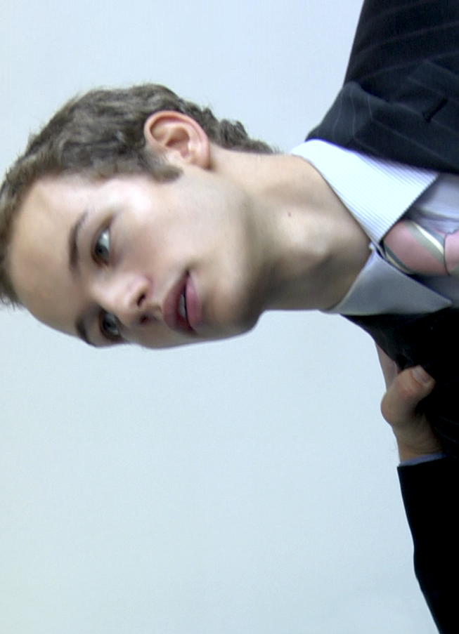00:52
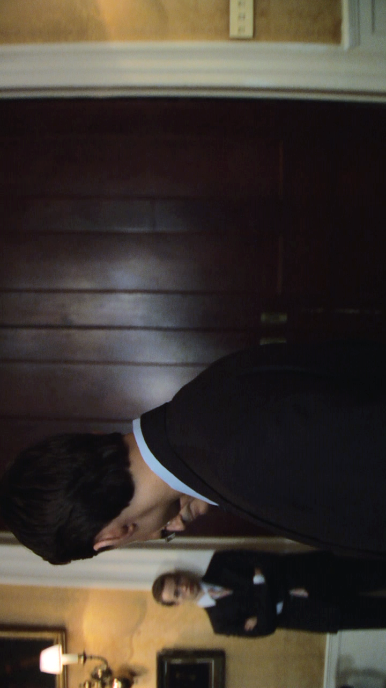01:39
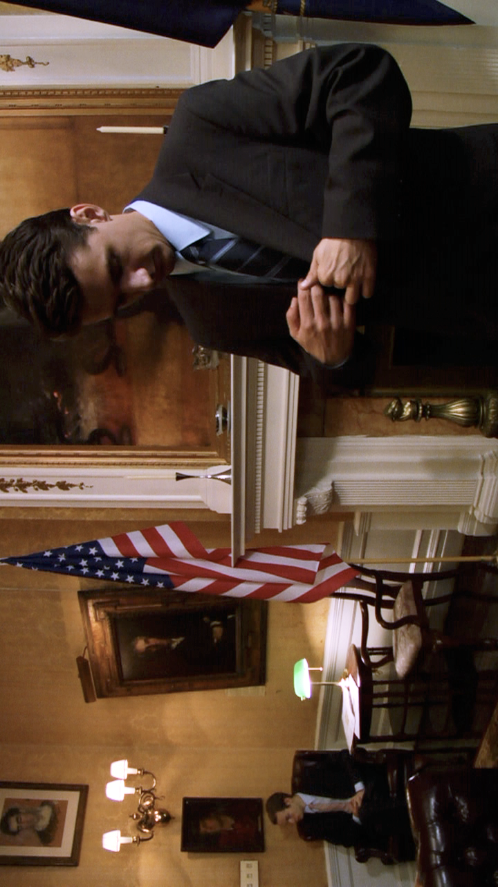01:52
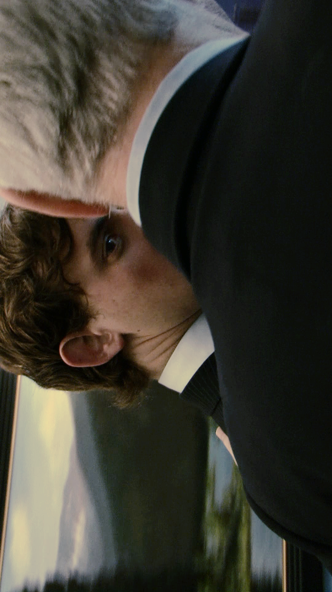02:21
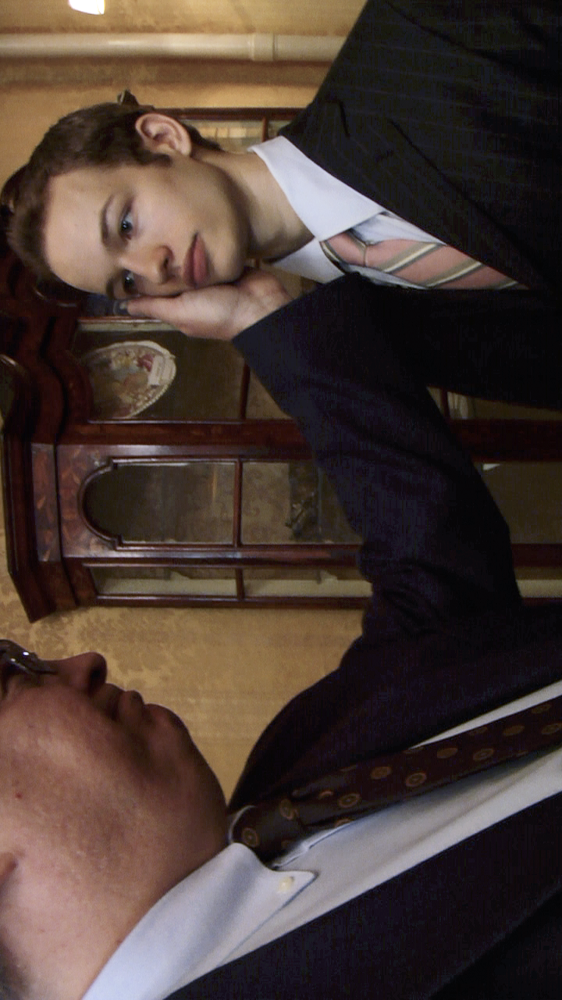02:35
Kunstenares Julika Rudelius toont in haar werk hoe macht structuren eruit kunnen zien. In de video installatie Rites of Passage toont ze twee gesynchroniseerde video's naast elkaar, die elkaar steeds aflossen. Je ziet in deze video's succesvolle financiële en politieke leiders die hun pupillen advies geven en overhoren. Dit gebeurd allemaal in de privé kantoren van deze mentors waarin ze op een nonchalante bijna seksuele manier met hun pupillen een gesprek hebben, of juist stil in de ruimte staan en elkaar observeren. Een pupil laat zien en horen hoe hij over een bepaald onderwerp zou praten in dit geval is het onderwerp politieke leiders, zijn mentor bekijkt nauwlettend en geeft aanwijzingen raad en advies over hoe hij bepaalde dingen sterker en krachtiger over kan laten komen.
Het gaat hier voornamelijk over de houding van de pupillen en de manier waarop ze praten, bewegen oogcontact maken en hun lichaamstaal sterk houden het gaat binnen deze gesprekken niet zozeer over de onderwerpen zelf of het belang hiervan, maar puur over de visuele aspecten van het presenteren. Dit lijken momentopnames uit een waargebeurd gesprek. Maar in de werkelijkheid is dit allemaal in scene gezet door Rudelius. Zo zie je dat alles in scene gezet kan worden en je blindelings kan vertrouwen op dingen zolang je er niet teveel achter zoekt. Dit vertrouwen komt omdat alles heel gedetailleerd en geloofwaardig in elkaar zit. Hun kleding klopt helemaal en is herkenbaar. Je ziet de Amerikaanse vlag dus je gelooft snel dat het politieke of financiële leiders zijn. De kantoorruimtes zijn zoals je ziet in bekende series en presidentiële foto’s. Door deze façade die er betrouwbaar en goed uitziet bevraag je niet of het wel echt is wat je ziet.
Je voordoen als iemand anders, is iets wat veel wordt gaan onder jongeren. Deze andere personages van zichzelf laten ze zien door middel van hun Instagram account. Instagram is voor jongeren een platform waarin de rangorde bepaald wordt. Met hun eigen verzonnen ongeschreven regels bepalen ze digitaal aan welke tafel je plaats kunt nemen in de schoolkantine. De jongeren werken met tags binnen hun instagram accounts om zo meer clout te genereren. Clout betekend invloed dit is je groep volgers die naar je luistert en ondersteunen waar je voor staat. Volgers werken als een kettingreactie omdat de volger van degene die jou volgt jou weer gaat volgen. Op deze manier krijg je meer clout. Taggen doe je door in je foto mensen te taggen. Je koppelt dan andermans account naam op je geposte foto jouw volgers kunnen deze getagde persoon zien. Gebruikelijk doe je dit bijvoorbeeld in een familiefoto van kerst waarbij je je neefje nichtjes en ooms tagged. Maar jongeren hebben hun eigen manier hier voor bedacht.
Door de plaats van de tag van iemand kun je zien hoe close dit persoon is met degene in de foto. De lokatie van een tag is cruciaal , als je iemand tagged op de mond betekent dat het geliefde of beste vriend/vriendin is, ook wel een “broeder” of “zusje”. Andere tags plaatsen die belangrijk zijn, zijn de ogen en het hart. Dan heb je ook nog iets wat een “hoek tag” heet. Dan tag je iemand in de hoek van de afbeelding met vaak meerdere mensen over elkaar, je kunt dus nooit helemaal zien wie er allemaal zijn getagd in de hoek. Mocht je in een hoek getagged zijn dan betekent dit dat je niet nog niet bevriend ben met deze gene maar er wel potentie is voor een nieuwe vriendschap of liefde, je hebt de interesse gewekt van deze persoon. Dit alles gaat om de sociale status van deze leerlingen. En op deze manier bepalen ze wie in welke rangorde hoort. Wat er op Instagram gebeurd bepaald hoe je sociale leven eruit ziet op de middelbare school. Niemand van deze leerlingen wilt eindigen als een buitenbeentje.